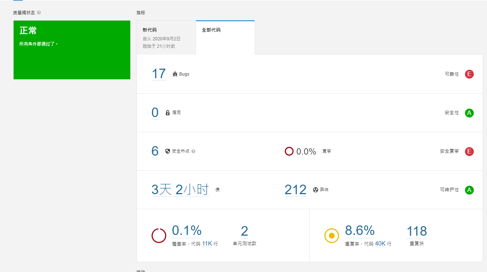

原本以為在 C#專案中指定了 js 的報告就可以看到覆蓋率，但事實好像不是這麼一回事，稍微測試了幾次皆以失敗告終，於是我想還是單獨建立一個 js 的專案，來分析 C#裡面的 js 部分
建立 SonarQube 專案
先建立sonarQube專案，Token 不管是用舊的或是重新產生一個都可以
選擇單元測試的工具
有之前的經驗，所以這裡摸索的時間就比較少，照慣例我們在分析之前需要將報告產生完畢，然後跟 sonar-scanner 說我們的報告在哪裡，因為採用jest作為單元測試的工具，整合sonarQube會比較簡單，所以我比較推薦這種；當然如果mocha、chai、nyc、karma這些東西對你很簡單就另當別論了；最終目的是為了要產生 lcov 格式的報告，以及通用格式的報告，這兩份報告一個是給覆蓋率使用，一個是計算測試數量
產生測試報告(使用 mocha)
因為這邊用的是mocha，所以需要安裝nyc套件；後續如果還要產生通用格式報告給sonarQube，似乎還要安裝別的套件去用，所以這一個部份我就只有研究到這邊了
1 | npm install mocha chai nyc --save-dev |
設置專案package.json的scripts如下
1 | { |
這樣就可以直接執行 npm run coverage 產生lcov.info了
產生單元測試報告(使用 jest)
首先安裝套件，如果已經在全域有安裝就可以省略這個步驟
1 | npm install jest --save-dev |
直接下指令npx jest --coverage即可，會自動產生coverage目錄，底下就有lcov.info檔案
在package.json當中加入下列區段
1 | "jest": { |
這樣子就會在目錄產生test-report.xml的通用格式報告，這個格式直接就可以指定給sonar-scanner了，如果要自訂報告的檔名、路徑，可以參考一下jest-sonar-reporter
如果想要用 ES6 的語法來撰寫單元測試，測試程式要使用import語法的話，要讓jest支援還需要安裝一下babel相關套件
1 | npm install --save-dev babel-jest @babel/core @babel/preset-env |
並且建立一個babel.config.js設定檔
1 | // babel.config.js |
下載 sonar-scanner 分析工具
SonarScanner目前版本到 4.4，我這邊下載的是Windows 64-bit版本， 下載下來是一個 Zip 檔案。解壓縮之後，在系統的環境變數將目錄下的/Bin 加入，執行分析的時候就可以不需要完整路徑
執行 sonar-scanner
| 指令 | 參數 | 說明 |
|---|---|---|
| sonar.projectKey | myProjectJs | 專案名稱，可隨意 |
| sonar.javascript.lcov.reportPaths | coverage/lcov.info | 覆蓋率報告，透過 npm run coverage產生 |
| sonar.testExecutionReportPaths | test-report.xml | 單元測試數量通用格式報告，安裝jest-sonar-reporter後執行測試自動產生 |
| sonar.tests | Test | 指定單元測試檔案的目錄位置 |
| sonar.sources | Scripts | 指定需要分析的原始程式碼目錄位置 |
| sonar.exclusions | node_modules/**,Scripts/Plugins/**,Content/** | 要排除分析的檔案 |
| sonar.host.url | http://127.0.0.1:9090 | sonarQube 的網址 |
| sonar.login | 32aafa7ac56a55dae90d0891487e7af98506ed33 | Token，從 sonarQube 取得，可重新產生 |
完整指令 sample
1 | sonar-scanner.bat -D"sonar.projectKey=myProjectJs" -D"sonar.javascript.lcov.reportPaths=coverage/lcov.info" -D"sonar.testExecutionReportPaths=test-report.xml" -D"sonar.tests=Test" -D"sonar.sources=Scripts" -D"sonar.exclusions=node_modules/**,Scripts/Plugins/**,Content/**" -D"sonar.host.url=http://127.0.0.1:9090" -D"sonar.login=32aafa7ac56a55dae90d0891487e7af98506ed33" |
- 執行指令之前需要先產生測試報告，也就是
npm run coverage - 指令請放同一行
可以看到覆蓋率以及測試數量的地方已經有數據了

結論
雖然好像目前並沒有辦法統整前後端的測試數據，但其實現在大多都屬於前後端分離開發，專案的數據分開來看應該也是可以接受的一個選項